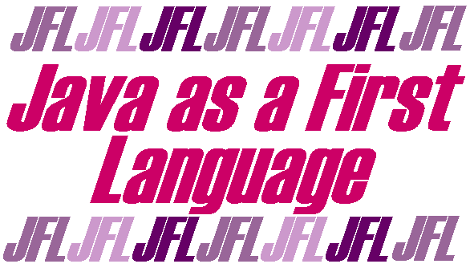

This resource contains the draft text of two books
provisionally called
"Java an Object First Approach" ISBN
0-13-858457
"A Java GUI Programmer's Primer"
ISBN 0-13-908849-0
All intellectual property rights to this material are claimed
by Fintan Culwin. The material is provided "as is" and
neither Fintan Culwin, nor Prentice Hall, nor South Bank
University make any assertion concerning its accuracy and deny
even its fitness for purpose.
The material is provided for individual use only! Requests
for any other usage, or any comments upon the material, should be
directed to fintan@sbu.ac.uk.